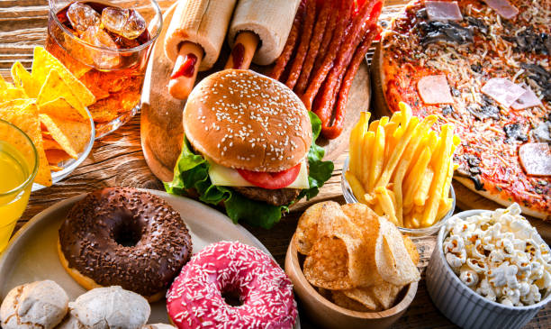
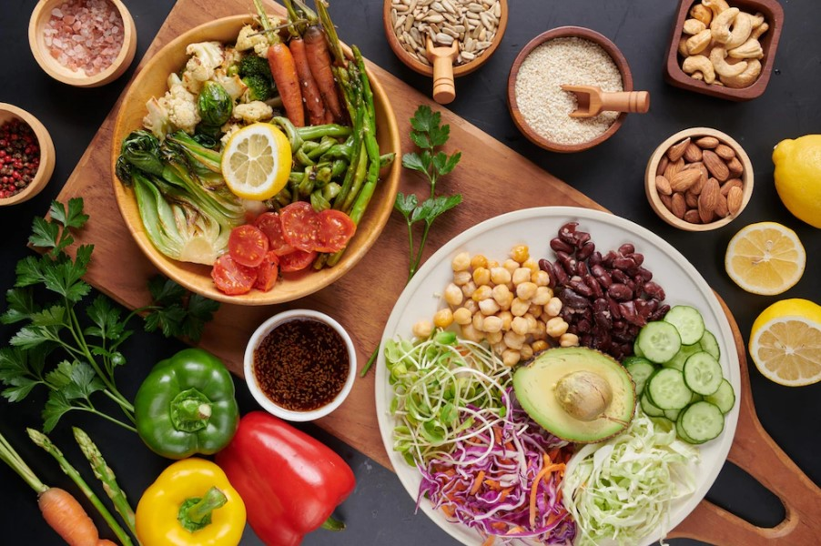

Alimentos não saúdaveis
Començando com alimentos destrutivos que devemos imediatamente, remover da nossa dieta e do nosso dia a dia.
Acima está a lista dos piores alimentos para se consumir na dieta, devemos evitar o máximo possível consumir esses tipos de comida.
Alimentos saúdaveis
Passando agora para os alimentos saúdaveis para uma dieta ideial, é importante sempre tentar manter esses tipos de alimentos na dieta.
Quais são os benefícios de uma alimentação saúdavel?
Uma alimentação saudável ajuda a proteger contra a má nutrição em todas as suas formas, bem como contra as doenças crônicas não transmissíveis (DCNT), entre elas diabetes, doenças cardiovasculares, AVC e câncer. A alimentação não saudável e a falta de atividade física são os principais riscos globais para a saúde.
Lista do Ranking dos 10 melhores alimentos
- Agrião
- Alface chinesa
- Acelga
- Folha de beterraba
- Espinafre
- Chicória
- Alface
- Salsinha
- Alface romana
- Couve
Esses são os alimentos mais saúdaveis para uma dieta ideal, segue essas dicas que você terá uma vida muito mais saúdavel.